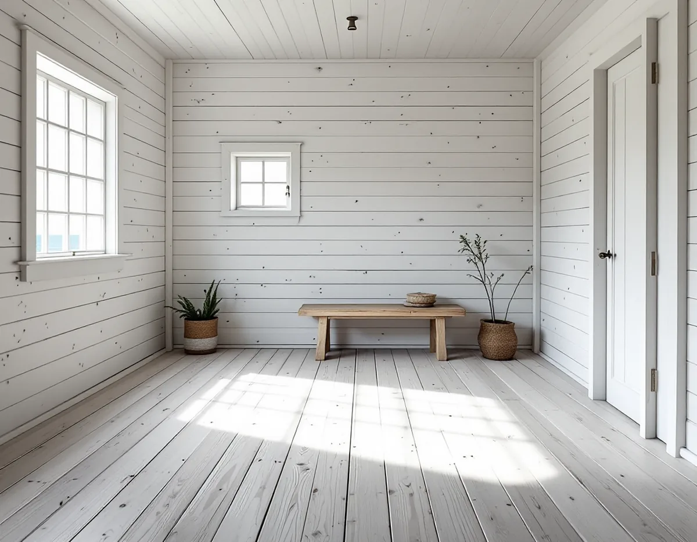
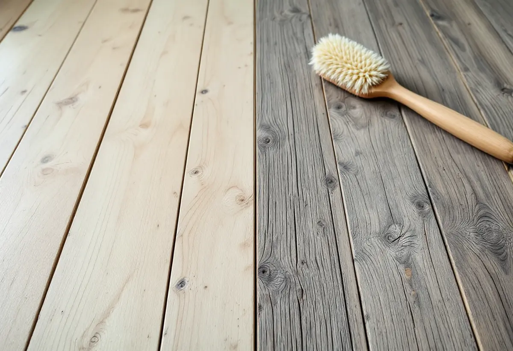

Platsbesök
Vi ser vad golvet är behandlat med och hur huset värms under året.
Många vill ha ett såpskurat golv i sommarhuset, men ett nyslipat golv beter sig inte som ett gammalt skurgolv. Fibrerna reser sig, springorna växlar med årstiderna och huset kanske står kallt halva året. Geal Entreprenad AB slipar och behandlar trägolv i fritidshus och villor i Norrtälje kommun, och vi börjar med att ta reda på hur golvet ska skötas efteråt.

Norrtälje kommun beskriver sig som en av Sveriges största landsbygdskommuner. Omkring 32 000 personer bor på landsbygden, och därtill kommer drygt 26 000 fritidshus. Kommunen uppskattar att ungefär en fjärdedel av dem som använder fritidshusen vistas i kommunen större delen av året.
Kommunens kulturmiljöutredning för Svartlöga och Rödlöga i ytterskärgården, från 2016, visar hur det kan se ut längst ut. Under 1900-talet flyttade de bofasta successivt därifrån, och sommargäster tog över de övergivna bostadshusen eller byggde nya fritidshus. Bebyggelsen består till stor del av timrade hus i en eller två våningar. I dag bor bara ett fåtal personer där på vintern, och någon framdragen el finns inte – den löses bland annat med solceller, gasol och egna vindkraftverk.

Svenska Byggnadsvårdsföreningen har fått en fråga från en läsare vars skurgolv blev luddigt och fick stickor efter såpskurningen, trots en mjuk borste. Föreningen svarar att det är typiskt för obehandlade, slipade golv: slipningen skadar de ytliga fibrerna mer än en hyvling gör, och de reser sig när träet torkar efter skurningen. Problemet brukar gå över efter några skurningar med hård borste och spring med tofflor. Det är vanligare när virket är snabbvuxet, och man kan prova att polera ytan med skurnylon.
Förr gick man i skor inomhus och skurade golven med sand, skriver föreningen, och det både slipade golvet och gav det dess silverlyster. I ett annat svar påpekar föreningen att ett hyvlat golv har mer intakta fibrer och är mindre känsligt för fläckar än ett nyslipat. Eftersom golven inte längre slits på det sättet tar det lång tid innan ett nylagt eller nyslipat golv får den ålderdomliga karaktären.
Har golvet i stugan lackats någon gång går det ändå att komma tillbaka till ett skurgolv. I ett svar om lackade golv i ett torp skriver föreningen att det sannolikt blir vackrare och mer lättskött om lacken slipas bort och golvet sedan såpskuras, men att fibrerna skadas av slipningen. På en mindre yta kan man först försöka sickla bort lacken. Är det en oljelack nämner föreningen i ett annat svar kaustiksoda blandad med tapetklister som ett alternativ: blandningen stryks på och skrapas bort, och golvet skuras och neutraliseras sedan med en svag ättiksyralösning.
När lacken är borta skuras golvet. Erfarna byggnadsvårdare är enligt föreningen oense om vilken såpbehandling som är bäst, men eniga om kallt vatten. Koncentrerad såpa som får stanna i träets porer gör fläckar lättare att få bort, även om ytan kan bli lite flammig de första gångerna. Lut användes inte förr eftersom den bryter ned ytan. Vill man ha en ljusare ton kan man blanda i kalk, men det framhäver också kärnveden i furu.
Om ett ouppvärmt torp med strimmig trägnagare skriver föreningen att ett skurgolv är ett bra alternativ, eftersom det saknar en ytbehandling som bromsar uttorkningen av tiljorna. Den årliga skurningen görs helst en tidig morgon på våren, när luftfuktigheten är som lägst och golvet torkar fort. På sensommaren och hösten kan man få nöja sig med att dammsuga och torka av med en fuktig trasa under morgontimmarna.
Springorna ändras också över året. I ett uppvärmt hus är de enligt föreningen smalast i slutet av sommaren och på hösten och bredast på våren när luften är torr. Drev i springorna blir fuktigt vid skurning och kan ge missfärgningar, så ett drevat skurgolv bör hellre torkas av än skuras med mycket vatten. En mer långsiktig lösning är att limma in smala trälister på notsidan och jämna dem till golvhöjd, gärna av splintved som är mer elastisk än kärnvirke.
Gäller frågan i stället breda golvplank, torpargrunden eller ett nytt golv finns det mer under golvläggare i Norrtälje.
Vi ser vad golvet är behandlat med och hur huset värms under året.
Slipning, sickling och första skurningen står var för sig.
Möbler bärs ut, och lister märks upp och tas bort.
Lacken tas bort så skonsamt som golvet tillåter.
Golvet skuras med kallt vatten och såpa när det är färdigslipat.
Du får veta hur golvet sköts när huset står tomt.
Skatteverket räknar slipning av golv som rotarbete, och avdraget gäller även ett fritidshus som du äger och använder. Bor någon annan permanent i ditt fritidshus räknas det inte längre som ett fritidshus du kan använda, och då ges inget avdrag.
Avdraget är högst 30 procent av arbetskostnaden, som mest 50 000 kr per person och år, och rot och rut får tillsammans vara högst 75 000 kr. Material och resor ger inget avdrag. Geal drar avdraget direkt på fakturan.
Golvytan, om lacken ska slipas eller sicklas bort, hur många rum det gäller och var i kommunen huset ligger. Efter ett gratis platsbesök får du ett skriftligt kostnadsförslag.
Parkett, trägolv, klinker och slipning.
Golvläggning i Stockholm →Takbyte, takbesiktning och plåtarbeten.
Takläggare i Norrtälje →Roslagen, skärgård och fritidshus.
Takrenovering i Norrtälje →Stugtomter, strandskydd och avlopp.
Attefallshus i Norrtälje →Fritidshus, WC-tillstånd och brunn.
Badrumsrenovering i Norrtälje →Nytt hus, förhandsbesked och egen brunn.
Byggföretag i Norrtälje →Ljust bostadshus och röda uthus.
Fasadmålning i Norrtälje →Bruksvillor, sommarvillor och Roslagens trähus.
Fasadrenovering i Norrtälje →Roslagens hus, bruksorter och bidrag i Norrtälje.
Fönsterbyte i Norrtälje →Gårdar, timmerhus och lösa innerbågar i Roslagen.
Fönsterrenovering i Norrtälje →Plankgolv i gamla gårdar och parstugor.
Golvläggare i Norrtälje →Gasolspis, vedspis och pentry i gäststugan.
Köksrenovering i Norrtälje →Trähus, fritidshus och kustlägen i Norrtälje.
Målare i Norrtälje →Takskydd, rännor och skorstensplåt i Norrtälje.
Plåtslagare i Norrtälje →Fritidshus, altan och gäststuga.
Snickare i Norrtälje →Kust, snö och Roslagens tak.
Takbyte i Norrtälje →Ny tapet i fritidshus och villor.
Tapetsering i Norrtälje →